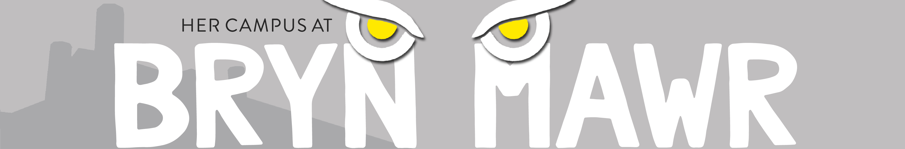

freelance photographer & digital content creator
philadelphia, pa

This website banner was redesigned for the relaunch of Her Campus Bryn Mawr (HCBMC).
The original banner had a cute illustrative quality about it that showed important campus motifs such as Pem Arch, the Bryn Mawr lantern, and our owl mascot. However, the mood was very gloomy.
For the redesign, I wanted to keep some of the same motifs, as we take pride in our traditions, but I also wanted to bring a modern energy with a bold, clean redesign.
The first iteration featured a silhouette of College Hall and the official Bryn Mawr owl used for Athletics. Inspired by the official owl, I illustrated a minimal icon for the final banner.
This banner redesign was submitted to the design team at Her Campus, tweaked by the team to meet the Her Campus brand standards (i.e. using the Her Campus font for the subheading), and published to the website.